Overview
This document highlights the OAuth sample application which was developed using the services that are set up on Volt MX Foundry. The OAuth application allows users to log in using various social identities and then invoke a few sample services from each provider. The OAuth application demonstrates the capability of Volt MX Foundry to successfully manage the backend tokens automatically and inject them into the subsequent integration service calls.
The purpose of this sample is to highlight the Volt MX Foundry Identity Services for authentication and how it secures and manages backend tokens when using other Volt MX Foundry Integration Services.
Volt MX Foundry Identity Services provides various identity connectors to integrate into existing enterprise’s identity providers and/or social identities such as Google, Facebook, etc. In addition to providing simple identity connectors, the Volt MX Foundry Identity Service also provides robust backend security token management and automatically manages those tokens and adds the tokens to outgoing subsequent API invocations. This allows the client app to avoid the complexity and security risk of managing backend security tokens.
The following Figure 1 shows the logical architecture of the Volt MX Foundry Identity Services. The Identity Manager connects to backend identity sources and receives one or more backend security token. The identity manager then generates a Volt MX Foundry Token for the client that is a signed JSON Web Token (JWT) token. Then the client makes an API call to other Volt MX Foundry services using the Volt MX Foundry Token and the Identity Service will automatically manage backend tokens as required.

Figure 1: Volt MX Foundry End to End Identity Management
The OAuth sample app and the backend Volt MX Foundry services that are discussed in this user guide focus on using the Volt MX Foundry Identity to connect to social identities via OAuth and then using Volt MX Foundry Integration to invoke OAuth-protected APIs to return user specific data from that provider.
Audience
This manual is intended for developers and IT professions using or intending to use Volt MX Foundry to build, integrate and deploy mobile applications across multiple channels and invoke back-end services that require OAuth authentication.
Overview of the OAuth Application
The OAuth application includes five identity services for Facebook, Microsoft, Box, LinkedIn, and Volt MX OAuth for authenticating the user within the client app. These identity services are then used by the integration services to invoke the provider APIs with the acquired OAuth access token. The screen shots of the sample app are below. In this example, the user selects to log in using their LinkedIn credentials. The app displays their user profile and enables them to share a link using the OAuth protected REST APIs exposed by LinkedIn.

Prerequisites
- You have access to a Volt MX Foundry server that has a sample OAuth application installed. If you do not have access to Volt MX Foundry, sign up for a 90 day trial at http://www.voltmx.com/products/konfoundry/trial.
Service Configuration Detail
This section covers the details of the configuration of the Box identity service that comes along with the instance of the Volt MX Foundry. Volt MX Foundry is preconfigured with the certain service providers. They are Facebook, LinkedIn, Microsoft, Instagram, Amazon, Yahoo, and Box Identity services. In this section, you will learn only about configuring the Box Identity service.
For the Box provider, the identity service authenticates using the Box OAuth provider. In this example, the integration service is integrated with the Google Calendar service to retrieve a user’s events. The following section will walk you through the Google Identity Service and the Google Integration Service configuration.
Log in to Volt MX Foundry
-
Navigate to the URL for Volt MX Foundry sent to you in your email after you registered for the Volt MX Foundry. Click the URL, and the Volt MX Foundry log-in screen for your cloud appears. To log in to the console, type in the username and password for Volt MX Foundry that was provided in the email.

Applications
Once you log into Volt MX Foundry, the application screen appears as shown below.
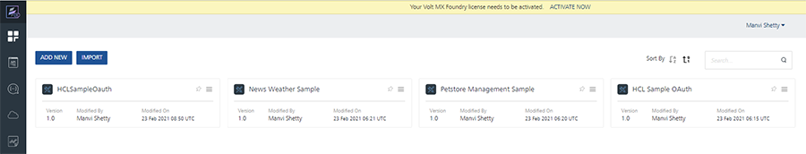
Click on the Apps icon that is shown below to see the list of all applications that are currently installed in Volt MX Foundry.
The screen shows the icon of OAuth Sample application.
- Click the voltmxSampleOAuth Sample application to review the services that will be used in the client application.
Volt MX Foundry Integration Services
After you click on the voltmxSampleOAuth icon, seven tabs that you can configure appear in the console. They are identity, integration, orchestration, objects, logic, offline sync, and engagement. This section will focus on the following tabs:
- The Identity tab helps you configure identity providers such as Active Directory, OAuth, SAP, and other as identities that can quickly map to each of your orchestrations and integrations.
- The Integration tab allows you to configure back-end services as mobile optimized services.
- The Orchestration service helps you combine integration services into a single service. An orchestration service reduces the need to make multiple calls from the mobile application that slow the performance of the mobile application.
VoltMX Foundry Box Identity Service
This section provides the details of the Box’s identity service which is set up in the Volt MX Foundry that will connect to Box backend using the OAuth protocol. The following are the steps to review the Box’s Identity service.
-
Click VoltMXSampleOAuth to display all the configuration details of the OAuth application.

-
The Identity tab of the Configuration details appears by default and all the identity services that are set up display. Click BoxOauth to review the identity service that is set up for Box.
-
In the BoxOauth identity details screen, the name of the identity service appears in the Name field. The Type of Identity is Box.
The Provider Details section provides the details of the back-end enterprise provider, which is Box in this case. The Authorize End Point is the URL that will be used to authorize with Box. The Token End Point is the end point to retrieve the tokens from Box. The Callback URL is the callback URL of the Volt MX Foundry that will be used by Box for callback functionality. This call back URL must be used when configuring the OAuth provider clientID. These values along with the OAuth client id and client secret must be obtained from the OAuth provider.
-
In the Advanced section of the identity screen, you will see the details that you must provide to fetch the user profile. The URL field displays the URL that will be used to fetch the user profile. The Resource Authentication Scheme field indicates that the authentication information will be in the header of the request. The Profile Request Method field indicates that Get method is used to fetch the profile information.
Click Test Login to test the identity service that has been set up.

-
A Grant Access dialog box appears. You must grant permissions to the Identity service. Note the list of permissions shown. More permissions can be added from the Box developer account.
-
After the successful log in, you will see a message Log in successful. You will also see that the profile information of the user from Box is retrieved and is displayed in the Identity Response.

Volt MX Foundry Box Integration Service
This section provides the details of the Box’s integration service that is set up in the Volt MX Foundry that will connect to Box backend and retrieve the user’s Box folders and files list. The following are the steps to review the Box Integration service.
- After logging into the Volt MX Foundry and click VoltMXSampleOAuth application ( shown as 1 below). This will display all of the application details.
-
Click the Integration (shown as 2 below) tab to review all the integration services that have been set up.

-
Click BoxServicesList to review the details of this integration service.
-
You will notice that Service Definition is selected by default. The Name will contain the name of integration service. The Client Authentication shows that the previously created identity service will be used with this integration service. This is how Volt MX Foundry Identity knows which backend token to automatically add the OAuth access token from Box Login into the outbound call to the OAuth protected REST APIs.

-
Click Operations List to review the list of all the operations.
-
Click get_folders_folderId operation to review the operation details.

-
The Name displays the name of the service. The Operation Security Level indicates that the user has to be authenticated to invoke the service. The Http Method indicates that HTTP GET will be used to retrieve the data from the backend service. The Target URL will be used to retrieve the data from the backend.
-
In the Advanced section of the operation details, you will notice that Request Input is selected by default. Also in the Body, you will notice that there is a folderId filed with a test value. This value of the parameter will get appended to the URL to invoke the service.
At the bottom of the page, select a test environment and click on Save and Fetch Response to test the operation and the fetch the data.
-
Once the token is generated and the operation is successfully invoked, you will see the response as shown below.

-
Click Response Output to review the XPath mappings that were created for this operation.
Click Test to test the mappings.
Configuring Volt MX Foundry OAuth Service
In this section, you will learn how to configure developer accounts of Facebook, Box, Google, LinkedIn, and Microsoft with Volt MX Foundry’s OAuth services. The Volt MX Foundry comes with preconfigured identity services to connect to various identities however you can follow the steps below to create your own social identity credentials with various identity providers like Microsoft, Google etc. and then use those credentials to configure the services in Volt MX Foundry.
Configuring Microsoft Developer Account
-
Log in to https://apps.dev.microsoft.com. Click Sign in to log in into the account.
Click Test to test the mappings.

-
Enter the Email and Password, shown as 2 in the image below. Click Sign In to log in to the account, shown as 3 below.
-
Click Add an App (shown as 4 ) to add a new application in your developer account.

-
Enter the name of the application in the Name text field ( shown as 5). Click Create Application ( shown as 6) to start the creation of the application.
-
Click Add Platform ( shown as 7) to select the platform that the application is targeted for.

-
Select the platform as Web (shown as 8 below) as the application will be targeted to the web platform.

-
Next, you will need to log in to your instance of Volt MX Foundry to retrieve some information that is needed to configure this app that you are creating in https://apps.dev.microsoft.com.
Log in to the Volt MX Foundry and click Apps to display all the apps that are configured in the Volt MX Foundry.
-
Click VoltMXSampleOAuth application (shown as 10) to view the services that are configured for this application.
-
Click MicrosoftLogin service ( shown as 11) to review the service details.

-
Copy the Callback URL (shown as 12) as you need this to configure the app that is created on https://apps.dev.microsoft.com
-
Enter the Redirect URI (shown as 14) in the web platform section of the application. Click Add URI to add the URI to the application.
-
Click Generate New Password (shown as 15) to generate the password for the application. The password generated is displayed in a dialog box.

-
Copy the Application Id (shown as 16) and the Password (shown as 17). Click OK (shown as 18) to close the dialog box.
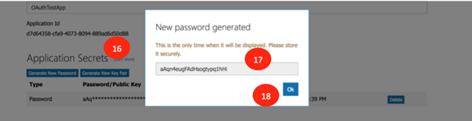 -
Click Save (shown as 19) to save the configuration of the application on the Microsoft website.

-
Log in to the Volt MX Foundry if not already done. Access the MicrosoftLogin service of the VoltMXSampleOAuth application. In the Client Id (shown as 20) and the Client Secret fields, (shown as 21) enter the Application Id and the Password that were generated earlier on https://apps.dev.microsoft.com.
Click Test Login to test the service with the new Client Id and Client Secret.

-
Next, you will see a screen as below, where you must enter the password (shown as 23) of the Microsoft account that was created. Enter the password and click Sign In (shown as 24) to sign into your account.
-
After successful log in using the credentials entered in the earlier step, the details of the account are displayed by the service that is set up in Volt MX Foundry. Click on the cross mark (shown as 25) to close the window.

-
Click Save to save the configuration of the MicrosoftLogin service with the new Client Id and Client Secret.

Configuring Google Developer Account
This section of the document discusses the details of the Google developer account along with the associated client Id and Client Secret. You can use this client Id and client secret to configure the identity service of Google with your own account information.
-
Enter https://console.developers.google.com in your browser. Enter the email address in the text box (shown as 1 below).

-
After your successful log in, click I agree (shown as 2 below) to allow Google to make changes to your account.

-
Click Create Project (shown as 3 ) to begin the creation of the new project. You must create a new project to get the required credentials to configure the app.
-
Enter the New Project name (shown as 4) and click Create (shown as 5) to begin the creation of the project.

-
Click on Credentials (shown as 6) to begin the creation of the credentials for the application that was just created.

-
Click the Create Credentials drop-down list and select API Key *( shown as 7) to begin the creation of the API Key for the application.
-
After the API key is created (shown as 8 ), click Close (shown as 9) to close the pop-up dialog box.
-
Click OAuth Client Id in the drop-down list to begin the creation of the OAuth Clint Id and client secret for the application that was created.

-
Click Configure Consent Screen to continue the creation of the client id and secret.

-
In the OAuth Consent Screenfield, enter the name of the application in the Product Name shown to users field(shown as 12). Click Save (shown as 13) to save the settings.
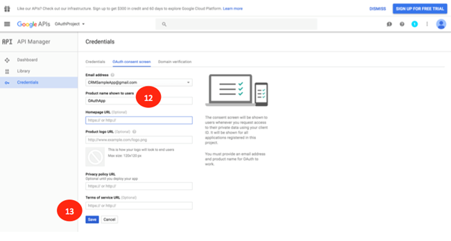
-
Log in to your instance of Volt MX Foundry if not already done. Click Apps to see the list of all apps that are installed in the Volt MX Foundry instance. Click VoltMXSampleOAuth (shown as 15) to view the details of the application.
-
Click on GoogleLogin(shown as 16) identity service to view the details of the service.

-
In the details section of the identity service, make a note of the Callback URL(shown as 17) as this will be needed to configure the application that you are creating on the https://console.developers.google.com website.
-
Select Web Application as the Application Type (shown as 18). Enter the Callback URL that was noted earlier into the Authorized Redirect URI(shown as 19) and click Create. This will create the client Id and client secret for the application created.

-
Copy the Client Id and Client Secret (shown as 21). This client id and client secret will be used to configure the identity service in Volt MX Foundry.

-
Log in to Volt MX Foundry if not already done. Select the GoogleLogin service and enter the Client Id (shown as 22) and Client Secret (shown as 23). Click Test Login(shown as 24) to test the service with the credentials entered.

-
Click Allow (shown as 25) for the identity service to retrieve the details of your Google account.

-
After the details are successfully retrieved the information will be displayed in the Identity Response section. Click on the cross mark (shown as 26) to close the window.

-
Click Save to save the newly configured identity service.

Configuring LinkedIn Developer Account
This section of the document discusses the details of the creation of the LinkedIn developer account and the associated client Id and Client Secret. You can use this client Id and client secret to configure the Volt MX Foundry’s identity service of LinkedIn.
- Enter https://developer.linkedin.com/ in your browser. Click Sign In to create an account or log in to an existing account (shown as 1 below).
-
Enter the email address and the password (shown as 2) for the LinkedIn account that was created.

-
Click My Apps to create a new App. You must create a new app to generate a client Id and a client secret. You need the client ID and the client secret to configure LinkedIn.

-
Click Create Application to continue the creation of the new application.
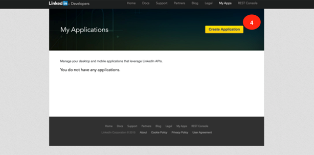
-
Enter the required information in the Create Application screen and click Submit to save the application details.

-
Log in to your instance of Volt MX Foundry if not already done and select the VoltMXSampleOAuth application. Click LinkedInLogin service to review the service details. Note that Callback URL (shown as 6) as this is needed to configure your newly created application of LinkedIn.
-
Now continue the creation of the new LinkedIn application. Please note the Client ID and Client Secret (shown as 7). Copy the Callback URL from Volt MX Foundry into Authorized Redirect URLs and click Add (shown as 8). Click Update to update the newly created application details with the URL.
-
Log in to Volt MX Foundry if not already done. Select the VoltMXSampleOAuth App and the LinkedInLogin service. Copy the Client Id and Client Secret from the newly created LinkedIn app and copy the same into the Volt MX Foundry’s Client Id and Client Secret fields (shown as 10). Click Test Login (shown as 11) to test the newly configured service.

-
Click Allow (shown as 11) to authorize the Volt MX Foundry identity service to access your LinkedIn account information.
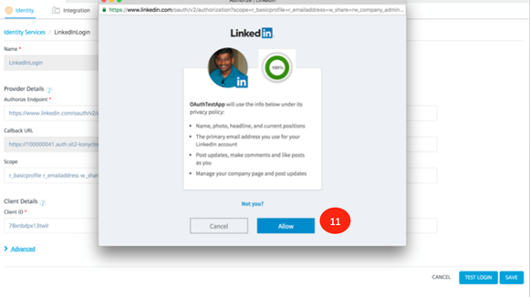
-
After the service is successfully invoked, the response will be displayed in the Identity Response section. Click the cross mark ( shown as 12) to close the window.

-
Click Save ( shown as 13) to save the newly configured service with your client Id and client secret.
Configuring Box Developer Account
This section of the document discusses the details of the creating a Box developer account and the associated client Id and Client Secret. You can use this client Id and client secret to configure the Volt MX Foundry’s identity service of Box.
- Type https://developer.box.com/ in your browser of choice. Click Log In (shown as 2 ) or click Sign Up ( shown as 1) to sign up for a new account.
-
Enter your email and password (shown as 3) to log into your Box account.

-
Click Create a Box Account (shown as 4) to create a new application. A new app is needed to generate the Client Id and Client Secret that are needed to configure the Box identity service of Volt MX Foundry.

-
Enter the name of the application (shown as 5) and click on Generate Application (shown as 6) to begin the generation of the application.
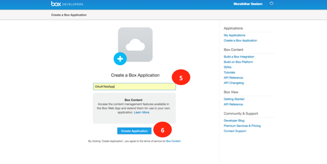
-
Log in into your instance of Volt MX Foundry if not already done. Click on VoltMXSampleOAuth application and select the BoxLogin Identity service to review the details. Note the CallBack URLas that is needed to configure the new Box application.
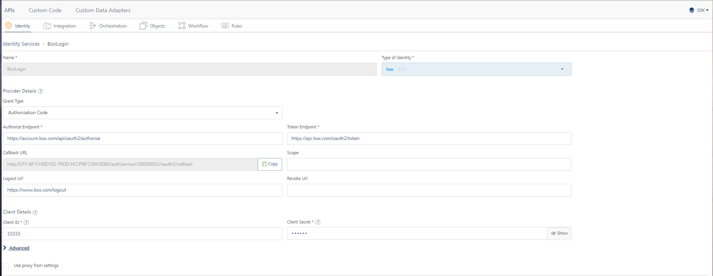
-
Copy the Callback URL value of the Volt MX Foundry’s Box identity service to the Redirect_URL (shown as 8) section of the Box application. Note down the Client Id and Client Secret from the Outh2 Parameters (shown as 8) section of the Box application. You need the client Id and the client secret while configuring the Volt MX Foundry service.

-
Click Save Application to save the newly created Box application.

-
Log in into your instance of Volt MX Foundry if not already done. Click VoltMXSampleOAuth application and select the BoxLogin Identity service to review the details. Copy the Client Id and Client Secret from the new Box application to the Client Id (shown as 11) and Client Secret (shown as 12) of the Volt MX Foundry application. Click Test Login to test the identity service with the new credentials.

-
Click Grant Access to Box (shown as 13) to allow the Volt MX Foundry identity service to access the Box account details.

-
After the identity service has successfully logged with the credentials provided, the details are displayed in the Identity Response section. Click the cross mark(shown as 14) to close the response section.

-
Click Save to save the newly configured Box identity service.

Configuring Facebook Developer Account
This section of the document discusses the details of the creation of the Facebook developer account and the associated client Id and Client Secret. You can use this client Id and client secret to configure the Volt MX Foundry’s identity service of Facebook.
- Type https://developers.facebook.com/ in your browser to access the developer site of Facebook. Click Log In (shown as 1) to log in to the developer account.

-
If you already have an account, log in using the Email and Password (shown as 2) and click Log In (shown as 3). If you do not have an account, click Sign up for Facebook to create a new account.

-
Click on My Apps and Add a New App to begin the creation of a new app.

-
Choose the WWW (shown as 5) below to create the application for the web platform.
-
Enter the application name (shown as 5) and click Create Facebook App Id (shown as 6).

-
Enter the Contact Email and choose Category and click Create App Id for the new application that is being created.
-
Enter the text for the security check in Text in the Box (shown as 10) and click Submit to pass the security check.
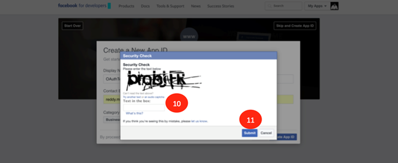
-
Log in to your instance of Volt MX Foundry if not already done. Click Apps to see the list of all apps that are installed in the Volt MX Foundry instance. Click VoltMXSampleOAuth (shown as 15) to view the details of the application. Click FacebookLogin identity service to view the details of the service. Note the Callback URL as this will be needed to configure the newly created app of Facebook.

-
On the developer site of Facebook, enter the Callback URL value in Site URL (shown as 13). Click Next (shown as 14) to continue the creation of the application.
-
Click Skip to Developer Dashboard(shown as 15) to complete the creation of the application.

-
Copy the App Id (shown as 16). Click Show (shown as 17) to view the App Secret. The App Id and App Secret are needed to configure the Facebook identity service of Volt MX Foundry with your application credentials.

-
Enter the password of your Facebook account in the password field (shown as 18) if prompted.
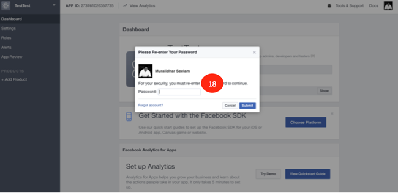
-
Note the App Secret (shown as 19) as it is needed to configure the Facebook identity service of Volt MX Foundry.

-
Log in to your instance of Volt MX Foundry if not already done. Click VoltMXSampleOAuth app. Click FacebookLogin to view the details of the service. Enter the App Id that was saved earlier into the Client Id (shown as 20) and App Secret into Client Secret (shown as 21) fields. Click Test Login (shown as 22) to test the service with the configured data.

-
After the successful invocation of the Facebook identity service, the data that is returned is displayed in the Identity Response section. Click the cross mark (shown as 23) to close the window.
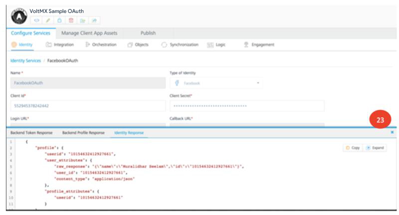
-
Click Save (shown as 24) to save the service new the new configuration.
Configuring Volt MX OAuth Account
This section of the document discusses the details of the creation and usage of your manage.hclvoltmx.com credentials in the Volt MX OAuth application. You can use the same username and password you use in the manage.hclvoltmx.com portal, to restrict access to the application.
- Navigate to https://manage.hclvoltmx.com. You will see the log in screen for your Volt MX account.

-
Create your account by clicking the Create a free account link.
-
Fill in the Account creation form and proceed to click on Create your Account.


-
On successful creation of your account, please proceed to use the email address you provided to activate your Volt MX Cloud account.

-
Fill in the additional details required to create your Volt MX Cloud account. Click Create Account to proceed.

-
Click on Get Started to start using your new account.
-
Your Volt MX Cloud account is now ready to use.
-
Creating Volt MX Foundry service to access Volt MX Cloud account. The Volt MX OAuth application uses an integration service to connect to the Volt MX OAuth endpoint. You can connect to this service by using the endpoint: https://manage.hclvoltmx.com.
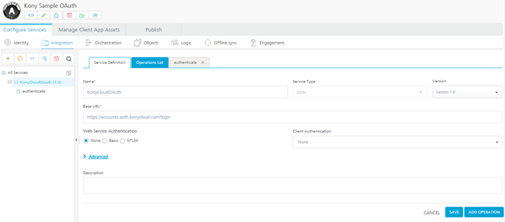
-
Add an authenticate operation to take in the userid and password as input parameters.
-
Click on Fetch Response to retrieve profile information for any user with a Volt MX Cloud account.